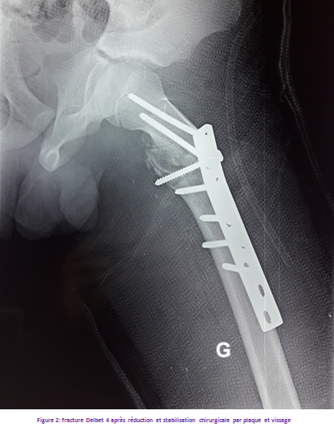
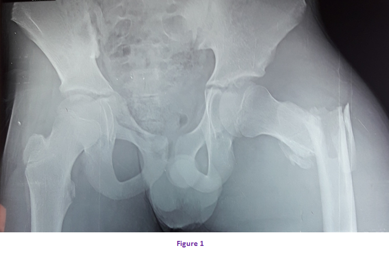

Cas clinique 6
Hanche
Patient de 12ans qui avait été admis aux urgences pour traumatisme du membre inférieur droit suite à un accident de la voie publique.
Le patient avait présenté une impotence fonctionnelle totale du membre inférieur droit associée à une douleur en regard du grand trochanter. L’examen avait noté également que le membre inférieur droit était fixé en flexion abduction rotation externe avec raccourcissement.
Réponse :
Il s’agit d’une fracture per trochantérienne avec un troisième fragment associée à une fracture du petit trochanter déplacée classée stade IV de Delbet.
Réponse :
Le traitement est chirurgical : réduction à ciel ouvert du foyer et stabilisation par une plaque et vissage du petit trochanter. (Figure 2)

Réponse :
La pseudarthrose
L’épiphysiodèse
Le Cal vicieux
Réponse :
Oui. On demande une radiographie du bassin de face à 1 mois, 3 mois puis 1 an.
- Eviction scolaire : 2 à 4 mois.
- Eviction sportive : 1 an.
Commentaire :
Les fractures pertrochanteriennes sont rares chez l’enfant. Ce ne sont donc pas de véritables fractures du col du fémur. Leur pronostic vasculaire est excellent.
Commentaire :
Possibilités et indications thérapeutiques :
Le traitement des fractures du col du fémur de l’enfant est chirurgical dans la plupart des cas et doit être réalisé en urgence.
Quelques particularités propres à l’enfant doivent être connues.
Le périoste de l’enfant est épais et résistant autour du col du fémur et va limiter le déplacement dans près de la moitié des cas. En revanche s’il est déchiré et interposé dans le foyer de fracture, il empêchera une réduction anatomique. En raison de la vascularisation de l’épiphyse fémorale, les fractures cervicales ou certaines fractures cervico-trochantériennes peuvent léser les vaisseaux périostés lors de leur trajet sous le périoste, le long du col fémoral entraînant un risque de nécrose épiphysaire. L’os spongieux du col du fémur et de la région trochantérienne est très dense et résistant, offrant une excellente prise au vissage.
- Type I :
La fixation chirurgicale est de règle, parfois même en percutané par une ou deux broches chez le jeune enfant ou des vis à compression chez l’adolescent.
- Type II :
Les fractures non déplacées et les fractures peu déplacées à trait horizontal peuvent être traitées par plâtre pelvi-pédieux pendant 4 à 6 semaines, en surveillant régulièrement l’absence de déplacement secondaire.
Les fractures peu déplacées à trait vertical sont instables et il est prudent de les traiter chirurgicalement par ostéosynthèse à foyer fermé.
Les fractures déplacées doivent être ostéosynthésées. La fixation se fait par deux vis ne franchissant pas le cartilage de croissance.
- Type III :
Le traitement est chirurgical.
La réduction est obtenue comme pour le type II soit sur table orthopédique ou par abord chirurgical antéro-externe.
S’il existe un décollement apophysaire du grand trochanter, il faut le fixer par un cerclage à effet de hauban appuyé sur 2 broches verticales, après réduction et fixation du trait principal.
- Type IV :
Le traitement orthopédique par traction collée permet d’obtenir parfois un bon alignement en flexion à 90° (Traction au Zénith), sinon réduction chirurgicale à ciel ouvert et stabilisation par plaque vissée.
Commentaire :
Le risque de nécrose de la tête fémorale est faible, d’autres complications sont possibles :
La Coxa vara post traumatique :
Elle se définit par une fermeture de l'angle cervico-diaphysaire dont la valeur devient inférieure â 135 °. La valeur normale de cet angle chez l'enfant varie de 145 à 150 degrés. La coxa vara post traumatique est avant tout liée au traitement orthopédique.
La Pseudarthrose :
Le type III (basicervical) a une grande tendance à la pseudarthrose. Elle peut être plus ou moins serrée ou se présenter sous la forme d'une grande dislocation avec raccourcissement important entraînant souvent une nécrose aseptique secondaire.
La Fermeture précoce des cartilages :
Principal trouble de croissance compliquant les fractures du col fémoral chez l'enfant. Cette fermeture précoce ne connaît pas encore de causes évidentes. On incrimine une nécrose avasculaire le traumatisme chirurgical provoqué par le matériel d’ostéosynthèse.
La part de raccourcissement entraînée par cette fermeture précoce est en fonction de l’âge de l’enfant : chez le tout petit enfant, une fermeture précoce des cartilages entrainera une inégalité de longueur de membre très importante. Par contre, chez le grand enfant, l'inégalité de longueur de membre résultant d'une fermeture précoce des cartilages sera minime.
Le Cal vicieux : dû en général à un traitement insuffisant ou un traitement orthopédique pour des fractures initialement ou secondairement déplacées.
Commentaire :
SUIVI :
- L’immobilisation post opératoire (traction collée, plâtre pelvi-pédieux) sera décidée en fonction de l’âge de l’enfant, du type de fracture et de la qualité de l’ostéosynthèse.
- le membre fracturé sera mis en décharge pour une durée prolongée, le délai de consolidation est de 2 mois au moins.
Les fractures du fémur nécessitent une radiographie de contrôle à 1 mois, 3 mois et à 1 an.
En cas de décollement épiphysaire, une scintigraphie osseuse doit être demandée pour juger de la vitalité de la tête fémorale.
La scintigraphie précoce au premier mois post-opératoire à une valeur pronostique certaine, car si la fixation est normale à ce stade, le risque de nécrose grave paraît faible. Il faut prévoir une surveillance radiographique à 3 mois, 6 mois, 1 et 2 ans.
L’ablation du matériel d’ostéosynthèse ne doit pas être envisagée avant un délai d’un an postopératoire.
-De la rééducation sera nécessaire pour apprendre la marche en décharge avec des béquilles, pour entretenir les mobilités articulaires et la trophicité musculaire.
Figure 1

Pour approfondir :
Les fractures du col du fémur sont des lésions rares mais graves surtout si elles ne sont pas correctement et rapidement prises en charge.
Elles surviennent essentiellement suite à des accidents de la voie publique, des accidents de bicyclette, des chutes de lieu élevé, et également ces fractures peuvent se rencontrer lors d'un accouchement difficile (on parle alors de fracture obstétricale).
Le risque principal des fractures du col du fémur est lié à la présence des artères (figure 2) qui irriguent la tête du fémur et qui passent au niveau du col (artères circonflexes) : en cas de lésion, une nécrose de la tête du fémur peut s'installer, et provoquer de graves séquelles sur l'articulation de la hanche.

Références
- HOLTON C, FOSTER P , TEMPLETON P.
Fractures of the femoral neck in children.
Current Orthopaedics 2006; P: 361-366.
- ALAIN VANNIEUSE, CHRISTIAN FONTAINE.
Fractures de l’extrémité supérieure du fémur.
Approche pratique en orthopédie-traumatologie 2000 ; P: 155-156.
- EL HAMDANI T.
LES FRACTURES DU COL DU FEMUR CHEZ L’ENFANT A L’HOPITAL HASSAN II D’AGADIR.
Pour l’obtention du doctorat en médecine ; thèse n°307/2007.
- TOUZET PH.
Fractures du col du fémur.
Orthopédiartie 4,1994; P: 40-43.
- OZONOFF MB.
The hip . In "Pediatric Orthopedic Radiology".
WB Saunders, Philadelphia, 1992, 164-303.
- OSBORNE D, EFFMANN E, BRODA K, HARRELSON J.
The development of the upper end of the femur with special references to its internal architecture .
Radiology 1980, 137:71-78.
- MIRDAD T.
Fractures of the neck of femur in children: an experience
at the Aseer Central Hospital, Abha, Saudi Arabia.
Injury, Int. J. Care Injured 33 (2002); 823–827.
- NOROUZI M, NADERI MN.
Femoral neck fractures in children: A follow up study of 19 cases.
European Journal of Trauma and Emergency Surgery 2008; P: 123-125.
- MORSY HA.
Complications of fracture of the neck of the femur in children.
Injury, Int. J. Care Injured 32 (2001); 45–51
- TOUZET PH.
La fracture de col de fémur chez l’enfant cahiers d’enseignement de la scoft.
Conférence d’enseignement 1994 ; pp :121-136.
- COLONNA PC
Fracture of the neck of the femur in children.
Am J Surg 1929 ; 6 : 793-797.
- MORRISSY R.
Hip fractures in children.
Clin Orthop 1980 ; 152 : 202-210.